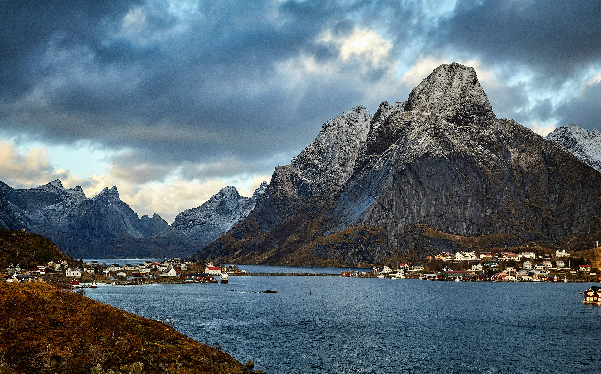

Know where to be
Your welcome email confirms our Copenhagen hotel, transfer details and Day 1 meeting time. Once you know those three things, arrival day is usually very straightforward.
🕔 First group meeting
Please meet in the restaurant room, located straight ahead as you exit the elevators at 5:30 PM. I’ll be there to welcome you and show you to our area.
Before 5:30 PM is usually arrival and settle-in time: check in (or store bags if early), freshen up, and acclimatise at your own pace.
🏨 Hotel check-in
Check-in is typically after 3:00 PM.
If you arrive earlier, reception can usually store your main luggage until your room is ready, so it helps to keep essentials in a small day bag.
Many people arrive well before check-in, including those on the morning transfers. After dropping your bags, use the time to acclimatise at your own pace.
✈️ Airport transfers and arrivals
Insight Vacations offers complimentary Day 1 airport transfers at set times. Please check your joining documents and welcome email for transfer timings and meeting details.
After collecting your luggage and exiting the baggage collection area, please make your way into the Arrivals Hall. The meeting point is to your right, near the Caffeine café and 7-Eleven.
If you have booked a private transfer, those details are listed separately in your documents. If you are making your own way, official airport taxis are easy to find.
🧭 Arrival note
Keep your hotel address, booking details, passport and phone easily accessible on travel day. If your arrival timing changes significantly, contact the support number in your official documents as soon as possible.

On the coach
The coach will be our moving base between destinations. A few simple habits help keep things comfortable, safe and pleasant for everyone travelling together.
🔁 Seat rotation happens daily. I will explain the system clearly on Day One.
🚻 There is often a WC on board, and we also plan regular comfort stops along the way.
🪜 Mobility & boarding: There are steps when getting on and off the coach, so please take your time and use the handrail.
⛴️ This itinerary includes ferry crossings, so it helps to keep a layer and anything essential in your day bag rather than packed in your suitcase.
🥪 Snacks are absolutely fine. For general comfort and safety on a moving vehicle, it’s best to avoid hot food and hot drinks while on the coach.
🎒 Bring a small day bag with what you may need during the day. Main suitcases stay in the coach hold until hotel arrival on travel days.
🧳 Carry-on space on the coach is limited. Smaller soft bags such as backpacks or tote-style bags work best overhead or under the seat. Wheel-based carry-on suitcases usually do not fit well in the racks above. They are best avoided as on-board bags.
🔔 Seatbelts: For your safety, please ensure your seatbelt is fastened whenever you are seated and keep it on throughout the journey.
🧼 Please be mindful of general hygiene. Clean hands and a bit of awareness go a long way in shared spaces. If you’re feeling unwell, just be considerate of others.
What to pack
Comfortable, practical and easy to manage usually works far better than overpacking on this tour.
Essentials
- Comfortable walking shoes you already trust
- Layered clothing for changing conditions
- ☔ A lightweight waterproof or weatherproof jacket
- A small day bag for travel days and sightseeing
- 🔌 Power adapters — Denmark, Sweden and Norway each use slightly different sockets. A universal travel adapter is the easiest option. Power plug guide
- Optional: wired headphones with a 3.5mm jack for audio devices on some sightseeing days
Packing smarter
- Pack for practicality rather than every possible scenario — and leave a little room for anything you pick up along the way.
- 🧥 Layers are key — coastal areas, fjords, mountains and cities can feel very different in the same day.
- Keep anything important for the day in your smaller bag, not the main case.
- 💧 Optional: bring a reusable drink bottle, but avoid bulky bottles — collapsible or slim styles are easiest to carry on coach days.
- 💡 Good shoes, layers and a waterproof jacket you trust will do most of the heavy lifting on this tour.
What to expect from the weather
Scandinavian weather can shift quickly, especially near fjords, coastlines and mountain areas. Forecasts are useful, but flexibility helps most.
🌦️ A practical reality
Cool mornings, mild afternoons, wind, rain and sunshine can all happen within the same day. That is very normal on this route.
🧥 What usually helps
Flexible layers usually serve you better than worrying too much about the perfect forecast. A light waterproof layer is worth having even when the day looks clear.
👟 Comfort beats style
This is a sightseeing-heavy itinerary with uneven surfaces, steps, outdoor stops and scenic viewpoints. Good shoes matter more than anything clever in your suitcase.
⛰️ Fjords and mountains
Scenic areas can feel cooler and breezier than city centres. Keep a layer in your day bag rather than packed underneath the coach.
Staying connected on tour
I use WhatsApp for reminders and day-to-day updates while we are travelling. Joining is optional, and it works alongside your official documents and welcome email.
-
1Download WhatsApp before you travel if you do not already use it — either from the link below or directly from your phone’s app store.
-
2Set up your profile and verify your number.
-
3Save my number in your phone from the welcome email or with the links above.
-
4Send me a quick WhatsApp message with your name so I know you are set up before the tour begins.
Practical notes
A few practical things that are useful to know before we get underway.
🧭 The pace of the tour
This is a classic Scandinavian journey through Denmark, Sweden and Norway. The variety and the destinations are what make it special — from capital cities and coastal scenery to ferries, fjords, mountain roads and longer scenic stretches. Expect a few travel days and some early starts, but they are all part of seeing this beautiful region properly.
🏨 Hotels
Across Scandinavia we use a mix of modern city hotels and regional properties, so room layouts and facilities can vary throughout the trip.
🚶 Walking
Expect cobblestones from departure day in Copenhagen, city walking, hills, and stairs throughout the tour. Comfortable shoes matter more than style on this one — every single day.
🌀 Air conditioning
Coaches are air conditioned, and many hotels and public venues will have cooling, especially in warmer parts of Europe. Hotel systems can vary by country and property, and some historic or mountain-region hotels may be more limited. If your room feels warm, ask reception what options are available.
🍽️ Included meals
Breakfast is included daily and some dinners are provided. On included meal days, timings are set to keep the itinerary running smoothly, so punctuality is appreciated.
👥 Travelling as a group
Touring as a group works best when everyone is mindful of shared timings. I will make sure things run smoothly from my end.
💳 Money and payments
Card payments are widely accepted across Scandinavia and are generally the preferred way to pay. It is still useful to carry a small amount of local cash for the occasional smaller purchase, public facility, or gratuity for a Local Specialist.
💱 Currency
Denmark uses Danish Krone (DKK), Sweden uses Swedish Krona (SEK), and Norway uses Norwegian Krone (NOK).
💐 Gratuities
Some gratuities are included in your tour price — restaurant staff and hotel porters, for example. Tips for your Travel Director and Driver are separate unless pre-paid.
If you have pre-paid — thank you, it is genuinely appreciated.
Guidance on appropriate amounts is in your Insight Vacations documents — or just ask me on tour.
If you are unsure whether gratuities are pre-paid, check your tour voucher or booking confirmation.
⭐ Optional experiences
Your tour already includes a lot, but optionals are worth knowing about. These are experiences that go a little deeper in certain places, with everything organised for you.
They are hand-picked to suit the pace and places of this particular tour, and many guests who join them wish they had booked more.
Optional experiences are priced separately, so people who want them can choose them, and people who prefer a quieter pace are not paying for something they would not use. I will walk you through what is available once we are underway. There is never any pressure.
Important contact details
Save these before you travel — they are harder to find when you are already on the move.
Damian Watson
Phone / WhatsApp
+44 7307 279643
WhatsApp is usually the easiest way to reach me during the trip.
Questions before the tour?
Before our tour begins, I may not always be able to reply immediately, especially if I am with another group, but I will always reply as soon as I can.
🚨 Urgent or time-sensitive before departure?
For anything that needs immediate attention before Day 1, please check your welcome email for European Guest Services contact details.
Final note
During the tour, if you are ever unsure about anything, just ask. There is very little I have not come across before.